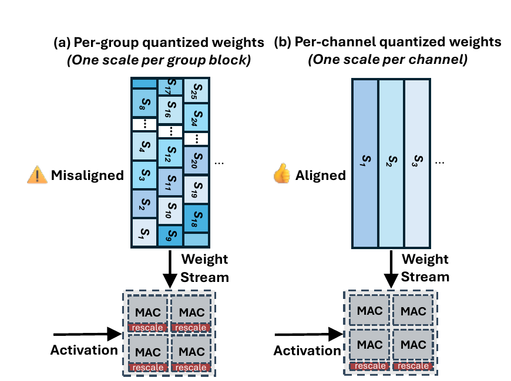
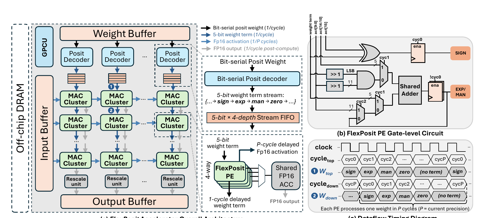
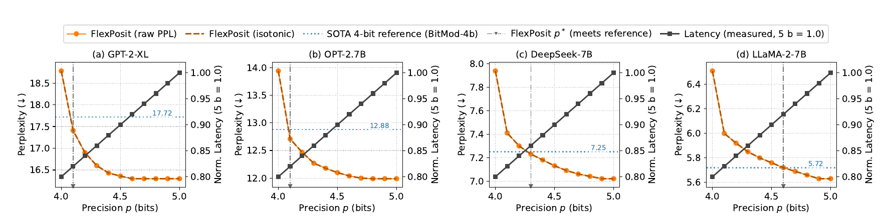
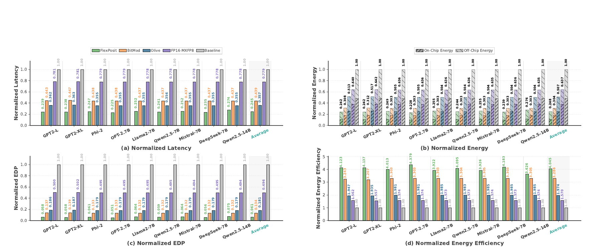

FlexPosit: Tunable Fractional Precision for LLM Inference Accelerators
低位元大型語言模型（Large Language Model, LLM）量化常在兩端拉扯：group-wise scaling 準，卻讓 systolic array 每個處理元件都背上 rescale 邏輯；channel-wise scaling 規整，卻難以承受 4-bit 的 heavy-tailed weights。FlexPosit 用 distribution-aware Posit、channel-window sensitivity ranking 與 bit-serial array，把平均精度變成 4–8 bit 間的連續時間旋鈕。
在作者的 16 nm RTL synthesis 與 cycle-level、iso-area/iso-PPL 模型中，FlexPosit 的跨模型平均 normalized latency 為 FP16 baseline 的 0.245，energy 為 0.248；但這是綜合與模擬結果，不是 silicon measurement。 §VI-A–C · PDF pp.9–13 · Fig. 11
文章目錄
先看三個對齊：尺度、資料流與位元時間
理解障礙不在於 Posit 的每一個欄位，而在於三種「對齊」同時發生：數值格式要對齊 weight distribution、scale granularity 要對齊 array columns、precision 要對齊執行 cycle。少看任何一層，都會把 FlexPosit 誤讀成單純的量化演算法。
量化後，乘法結果仍要回到原本的數值尺度
對稱量化可寫成 \(w \approx \alpha_g w_q\)：\(w\) 是原始權重，\(w_q\) 是低位元碼，\(\alpha_g\) 是第 \(g\) 個共享範圍的 scale。GEMM 先累積 \(w_q\) 產生的 partial sums，之後再乘回 \(\alpha_g\)；因此 scale 放在哪裡、多久換一次，會直接決定 rescale logic 能否共享。 §II-A · PDF p.3
Granularity 決定 scale 能不能跟 systolic column 一起走
Group-wise quantization 讓小群 weights 共用一個 scale，能貼近局部 distribution，但 flattened groups 通常切過 output channels；同一 column 的相鄰 processing elements（PEs）可能同時遇到不同 scales。Channel-wise quantization 則讓整個 output channel 共用 scale，weight stream 與 column 對齊，rescale unit 可以移到每欄底部共享。這個差異稍後會成為整篇硬體設計的因果起點。
Posit 用 tapered precision 配合 heavy tail
Posit(\(n,es\)) 依序編碼 sign、可變長 regime、固定長 exponent 與 mantissa。其值為
\(s\) 是正負號，\(k\) 由 regime run 決定，\(e\) 與 \(f\) 分別是 exponent 與 fraction。可變 regime 使靠近分布中心的數值得到較密集表示、離中心較遠的 outliers 得到較大動態範圍。 §II-B · PDF p.3
Bit-serial 把 bit-width 變成時間
Parallel datapath 通常把 4-bit、6-bit、8-bit 做成幾個固定模式；bit-serial datapath 則每 cycle 串流一個 bit position，精度 \(P\) 對應一個長度為 \(P\) cycles 的 execution window。FlexPosit 再讓不同 channel windows 選不同整數 \(P\)，於是整個模型的平均值可以是 4.1、4.4 或 4.7 bit，而 array 內單一 tile 仍保持同步。
這三個對齊準備好後，下一個問題就很具體：為何準確的 group-wise 量化，在硬體上會付出隨 array 放大的成本？
為何低位元精度越準，硬體反而越不規則？
本章要解開的矛盾是：quantization granularity 越細，通常越能保住 accuracy；但規整 accelerator 越希望一整欄、甚至一整個 tile 共用相同控制。FlexPosit 的目標不是在兩端擇一，而是找出第三條路。
{kind=link}

實驗事實作者以 16 nm TPU-class array area model 估算：當 array 放大到 \(32\times32\)，per-PE group-wise rescaling 使 core area 增加 32.1%，per-column channel-wise rescaling 則低於 1%。這不是端到端 silicon result，卻清楚指出 granularity 的結構性成本。 §III-A · PDF p.3 · Fig. 2
然而，channel-wise INT4 對 heavy-tailed LLM weights 太粗。以 Qwen2.5-7B 為例，per-channel INT4 的 WikiText-2 perplexity（PPL，越低越好）為 11.87；換成 Posit(4,1) 可降到 8.39，但仍落後 group-wise BitMoD 4-bit 的 7.49。 §III-B、§VI-B · PDF pp.4, 9–10 · Fig. 3、Table II
另一個缺口來自 discrete precision modes。既有 adaptable accelerators 通常只能在少數固定 formats 間切換，演算法卻知道不同 channels 對精度的敏感度並不相同。若真正需要的是 4.4-bit 的平均預算，只有 4/6/8-bit 模式的硬體不是過度配置，就是無法達到 accuracy target。 §III-C · PDF pp.4–5 · Table I
需求 1
以 distribution-aware datatype 彌補 channel-wise low-bit accuracy，而不回到 group-wise scale metadata。
需求 2
precision allocation 要細到能捕捉 intra-layer heterogeneity，但每次執行仍需符合 systolic tile 的 uniform timing。
需求 3
4–8 bit 間的任意平均預算，必須落成同一 datapath 的時間控制，而不是複製多套 datapaths。
三個需求共同指向一個反直覺的答案：分數 bit-width 不必存在於單一 weight，它可以存在於整批 channel windows 的時間平均。
把 4.4-bit 理解成「少數視窗多跑一個 cycle」
本章要跨過的概念門檻是「硬體怎麼算 4.4 個 bit」。答案是：它從不讓一個 weight 擁有 0.4 個 bit，而是讓敏感的 channel windows 使用 5-bit，其餘使用 4-bit。
把一層想成 100 個與 systolic columns 對齊的貨道。所有貨道先用 4 個時間槽傳完一個 weight；若 sensitivity ranking 判定其中 40 個貨道的資訊損失最嚴重，就讓它們各多用一個時間槽。平均精度便是
論文稱 \(b_{\mathrm{virt}}\) 為 virtual precision；當 5% windows 從 4-bit 升到 5-bit 時，平均即為 4.05-bit。真正的 allocation 依各 window 的權重數量加權，而不是只數 window 個數。 §IV-B · PDF p.6
分析這個 mental model 的關鍵不是「混合精度」本身，而是將空間異質性轉成時間異質性：同一 tile 內保持單一 \(P\)，只在 channel-window boundary 改變 \(P\)。因此 array 不需要同一時間處理多種 bit-width，也不需要為每個 PE 放 precision controller。
類比的邊界也要說清楚：貨道沒有呈現 Posit regime 的可變長語意、PE wavefront 的逐列 cycle skew、activation/weight buffering，也沒有反映不同 windows 的矩陣尺寸權重。它只用來解釋為何平均 bit-width 可以是分數，而單次 arithmetic 仍使用整數 cycles。
直覺成立後，方法的判讀標準也明確了：量化器要知道誰值得多一個 cycle，編碼器要能 serial decode，array 則要無 bubble 地切換 \(P\)。
FlexPosit 如何把分數精度落進規整 systolic dataflow？
本章要追的是一個 weight 從離線量化到 GEMM output 的完整路徑。FlexPosit 由四段串成：選 scale、排 precision、編 SerialPosit、在 GPCU 控制的 bit-serial array 內執行。
第一段：每個 channel 先把 distribution 對齊 Posit
Algorithm 1 固定 exponent size \(es\)，對候選 power-of-two scales 逐一 quantize/dequantize，以 signal-to-quantization-noise ratio（SQNR）選出每 channel 最佳 \(\alpha_g\)。Power-of-two scale 在硬體中可化成 exponent offset，避免 FP multiplier；作者以 4-bit index 儲存 scale，並在評估範圍固定採 \(es=1\)。 §IV-A · PDF p.5 · Algorithm 1
第二段：用 end-to-end PPL 找出最值得升級的 channel windows
先把所有 windows 設為 \(b_{low}\)，得到 \(P_{base}\)；再一次只將一個 window 升為 \(b_{high}\)，重新量測整體 PPL。論文的 sensitivity 定義為
\(M_w\) 表示只有 window \(w\) 被升級的模型。\(\Delta\mathrm{PPL}\) 越大，該 window 越值得先分配額外 bit；依排序升級直到 weighted mean precision 達到 \(b_{virt}\)。 §IV-B · PDF pp.5–6 · Algorithm 2
Window 大小必須是 array column count 的整數倍；論文預設 256 channels，Qwen 模型採 1024。這是方法最重要的 hardware alignment：profile 足夠細，tile execution 又不必同時混用多個 \(P\)。 §IV-B、§VI-A · PDF pp.5–6, 9
第三段：SerialPosit 讓 regime 可以邊到邊解
Conventional Posit 對負數使用 two's-complement，必須先看到整個 word 才能 inversion；SerialPosit 改成 sign-magnitude，使 sign、regime、exponent、mantissa 能按 bit arrival 立即辨識。Regime 的結束用相鄰 bits XOR 偵測，decode 後所有中間值回到 FP domain。表示值集合不變，但 encoded-domain compare/negate 不再可用；作者認為 weight-only storage path 不需要它們。 §V-C · PDF p.8 · Figs. 7–8
第四段：GPCU 用 \(P\)-cycle window 鎖住整座 array
{kind=link}

每個 column 上方的 decoder 將 weight 解成 sign、exponent、mantissa、zero 四類 5-bit terms，經小型 FIFO 供 PEs 消費。四個 bit-serial PEs 組成一個 MAC cluster，處理四個不同 FP16 activations 並 time-multiplex 一個 accumulator；理想 steady-state rate 為
在最低 4-bit 時，一個 cluster 每 cycle 等效完成一個 MAC；精度提高時 latency 近似隨 \(P\) 線性增加。Per-column rescale 只修改 FP16 exponent offset，再把 output 寫回 buffer。 §V-A–B · PDF pp.6–7 · Fig. 6
方法完整後，真正該問的不是「它能不能跑」，而是三層證據是否對得起主張：accuracy recovery、fractional latency scaling、以及 iso-area 下的 energy/throughput 優勢。
它真的同時守住 accuracy、latency 與 energy 嗎？
本章的理解障礙是 headline speedup 不能單獨看。FlexPosit 先用 PPL 定義與 BitMoD 的 iso-accuracy operating point，再在同 compute-area budget 下比較 latency 與 energy；若跳過這兩個 controls，結論會被誤讀。
實驗地基：九個模型，但硬體數字來自 synthesis 與 simulation
Accuracy 評估涵蓋 GPT-2 Large/XL、Phi-2、OPT-2.7B、LLaMA-2-7B、Mistral-7B、DeepSeek-7B、Qwen2.5-7B/14B。WikiText-2 sequence length 對 extended-context models 為 2048，GPT-2 為 1024；weights 使用 FlexPosit，主要設定的 activations 保留 FP16。 §VI-A · PDF pp.8–9
Accelerator 以 Verilog RTL、Synopsys Design Compiler 與 commercial 16 nm technology synthesis，端到端由 cycle-level simulator 建模；DRAM 用 Ramulator 2.0 DDR4，SRAM buffers 用 CACTI，主設定是 batch 1、input length 256、各 512 KB activation/weight buffers。FP16、BitMoD、OliVe 的面積與功耗由既有結果 process-scale 到 16 nm，arrays 再調整成與 \(32\times16\) FlexPosit 相同 compute area。 §VI-A · PDF p.9
Claim-test 1：4.x-bit 是否真的把 channel-wise accuracy 拉回來？
作者主張Posit(4,1) 提供較穩定的 channel-wise 4-bit substrate；少量 windows 升級後，FlexPosit 可用 sub-5-bit average precision 接近 FP16 並匹配 BitMoD 4-bit PPL。
實驗事實跨九個模型，uniform per-channel Posit(4,1) 相對 FP16 的 mean \(\Delta\mathrm{PPL}\) 為 1.57；升到 4.1-bit 後降為 0.64。以各模型「剛好匹配 BitMoD 4-bit PPL」的 precision efficiency bound（PEB）比較，需要 4.1–5.0 bit，mean \(\Delta\mathrm{PPL}=0.35\)。Qwen2.5-14B 是最困難者，直到 5.0-bit 才到 5.84 PPL，略優於 BitMoD 的 5.87。 §VI-B · PDF pp.9–10 · Table II
{kind=link}

分析證據支持「fractional knob 有效」，但不支持所有模型都能在 4.1-bit 達標；所需 precision 隨模型而變，這正是 tunability 的價值，也是部署時必須 profile 的成本。
Claim-test 2：效果是否來自 sensitivity ranking，而不只是多給 bits？
在 Qwen2.5-7B、相同 4.1-bit 預算下，random、location、Fisher ranking 的 PPL 分別是 8.25、8.36、7.92；Algorithm 2 的 end-to-end \(\Delta\mathrm{PPL}\) ranking 得到 7.76，相較 uniform Posit(4,1) 的 8.39 改善 0.63。 §VI-B · PDF p.10 · Table III
作者另把 datatype、per-channel scale、activation precision 與 ranking signal 控制住，只改 allocation granularity。於 4.4-bit，FlexPosit channel-window MPQ 在 OPT-2.7B、Phi-2、LLaMA-2-7B 的 PPL 為 12.18、10.51、5.80；同樣用 PPL signal 的 layer-wise baseline 則為 13.06、11.04、5.98。 §VI-B · PDF p.11 · Table IV
實驗事實MMLU 與 HellaSwag 亦隨 4.0→5.0 bit 單調恢復，但報告的 5.0-bit 結果仍普遍低於 FP16。FP8 activation ablation 僅小幅增加 PPL，且不改變各 weight precision 的相對排序。 §VI-B · PDF p.11 · Tables V–VI
分析Table III/IV 是最有力的 causal evidence：它們分別拆出 ranking metric 與 granularity。不過 downstream tasks 只有兩項，尚不足以把 PPL recovery 等同於廣泛能力保真。
Claim-test 3：iso-PPL 後，較小 datapath 是否轉成真實系統收益？
作者讓 FlexPosit 使用各模型的 PEB，再在 iso-area 下比較。跨九模型 geometric mean，normalized latency 為 FlexPosit 0.245、BitMoD 0.439、OliVe 0.357、FP16–MXFP8 0.779、FP16 1.0；normalized energy 分別為 0.248、0.304、0.507、0.637、1.0。這等價於 FlexPosit 對 BitMoD 約 1.8× throughput、1.2× energy reduction，對 OliVe 約 1.5× 與 2.0×。 §VI-C · PDF pp.12–13 · Fig. 11
{kind=link}

Workload sensitivity 從 \((B,L)=(1,256)\) 擴到 \((8,8192)\) 後，FlexPosit 對 FP16/BitMoD/OliVe 仍有 3.4×/1.6×/1.2× geomean speedup，energy reduction 為 3.5×/1.2×/1.8×。 §VI-C · PDF p.13 · Table X
分析結果與設計因果一致：per-column scaling 釋放 area，bit-serial PE 提高 compute density，sub-5-bit weights 降低 traffic。不過所有 system-level numbers 仍來自跨設計 modeling，不是同一套 silicon 上的 wall-clock/energy measurements。
到這裡可以接受「在作者模型內形成新 Pareto frontier」；下一章要刻意收窄主張，辨認哪些外推仍沒有證據。
0.25× latency 的證據邊界在哪裡？
最容易誤解之處，是把 normalized simulation result 讀成已量產 accelerator 的實測 speedup。FlexPosit 的論證鏈完整，但每一個環節都有明確適用範圍。
值得肯定的地方
分析論文沒有只報一組 PPL 或一個 PE area。它用 Figure 1/2 建立 granularity cost，Table III 拆 ranking，Table IV 拆 allocation granularity，Table V/VI 檢查 downstream 與 activation format，再以 iso-area/iso-PPL 限制硬體比較。這些 controls 使「distribution → allocation → datapath → system metric」的因果主線相當清楚。
Silicon 與 modeling 邊界
論文報告 Verilog RTL simulation 與 Synopsys synthesis，沒有 tape-out、post-layout timing/power、FPGA prototype 或 physical measurement。Baseline areas/powers 又由不同先前設計透過 process factors scale 到 16 nm；雖然 iso-area 是合理控制，仍無法排除 RTL style、memory interface、clocking、routing 與 technology library 差異。 §VI-A、§VI-C · PDF pp.9, 11–13 · Tables VII–IX
Profiling 可能把離線成本藏在 accuracy knob 後面
分析Algorithm 2 對每個 channel window 各跑一次 end-to-end PPL evaluation，理論上 profile 次數隨 windows 數量成長。論文沒有提供 calibration dataset size、profiling wall time、GPU hours、ranking 跨 workload/finetune 的穩定性或多久需要重做；若模型版本頻繁更新，這個 offline cost 可能成為實務瓶頸。 §IV-B · PDF pp.5–6 · Algorithm 2
Accuracy、統計與 workload 外推
主要 accuracy 指標是 WikiText-2 PPL，downstream 只覆蓋 MMLU/HellaSwag；5.0-bit 仍未完全回到 FP16。論文沒有報 repetitions、error bars、confidence intervals 或 statistical tests，也沒有驗證 instruction-following、code、long-context retrieval、reasoning reliability 與 generation quality。 §VI-A–B · PDF pp.8–11 · Tables II、V
硬體主設定是 batch 1/input 256，Table X 雖補到 batch 8/sequence 8192，仍是 cycle/memory modeling。沒有 multi-user serving、prefill/decode 分相行為、KV-cache bandwidth、kernel launch/runtime overhead 或 host-device integration。 §VI-A、§VI-C · PDF pp.9, 13 · Table X
Numeric format 與 datapath scope
FlexPosit 的主設計是 weight-only low-bit；activations 大多 FP16，FP8 僅作 PPL ablation。SerialPosit 放棄 encoded-domain compare/negate，對純 weight storage 合理，但若未來加入 activation quantization、dynamic sparsity 或 in-memory operations，這些功能限制需要重新評估。 §IV-A、§V-C、§VI-B · PDF pp.5, 8, 11 · Table VI
最穩健的結論是：FlexPosit 在作者定義的 edge-scale、weight-only、systolic、modeling 環境中，展示了可行且因果一致的 fractional precision Pareto improvement；它尚未證明相同幅度可直接移植到 production LLM serving 或實體晶片。
這些限制不是把工作推翻，而是指出最值得做的下一步：將 precision 從靜態 model profile 延伸成可量測、可控制的 runtime resource。
從 precision knob 還能推到哪些系統問題？
本章要把貢獻從「一個量化 accelerator」抽象成可重用設計：把數值品質轉成時間預算，再讓控制粒度與硬體規則對齊。以下延伸刻意區分可由證據支持的分析與尚待驗證的推測。
用低成本 proxy 取代逐 window PPL sweep
分析Table III 已顯示 Fisher ranking（PPL 7.92）雖不及 full \(\Delta\mathrm{PPL}\) ranking（7.76），卻明顯優於 random/location。可把兩者做成 cascade：先用 Fisher 篩出候選 windows，再只對 top subset 跑 PPL probe，量測 profiling time、accuracy loss 與 ranking stability 的 Pareto curve。 §VI-B · PDF p.10 · Table III
把 virtual precision 變成 service-level controller
推測GPCU 已能在 channel-window boundary 改變 \(P\)，因此 runtime 可以根據 battery、thermal headroom、deadline 或 token phase 選擇不同 \(b_{virt}\)。真正的研究問題是切換成本、quality guardrail 與 per-request isolation，而不是「能否改 bit-width」；需要在真實 prefill/decode traces 上量測。
把相同概念移到 PIM 與 sparse execution
作者主張Processing-in-memory（PIM）可把 precision 對應到啟用的 bit-planes，因此是自然的未來方向。 §V-C · PDF p.8 推測若再結合 structured sparsity，控制器需共同排定「哪些 weights 不算」與「留下的 weights 算幾 bits」，可能出現 precision、utilization 與 load balance 的三方耦合。
研究小組值得追問的五題
- 若所有 baselines 都以同一 RTL flow、SRAM compiler、physical design constraint 重做，Fig. 11 的排序與幅度會否改變？
- Channel-window sensitivity 在 instruction tuning、LoRA update、不同 calibration corpus 與 context length 之間能否重用？
- 以 task accuracy 或 generation quality 直接做 ranking，是否會選出與 PPL 不同的 windows？成本又增加多少？
- GPCU 的 global timing 在更大 arrays、多 clock domains 或 chiplet boundaries 上，控制與 skew 成本是否仍可忽略？
- 當 KV-cache、attention 與 memory bandwidth 成為 decode bottleneck 時，weight precision 降低帶來的 1.8× throughput 還剩多少？
這些問題的共同測試原則，是同時追蹤 quality、time、energy 與 control overhead；只看任一軸，都會失去 FlexPosit 最有價值的 co-design 視角。
讀完後如何回查數字與名詞？
這裡集中正式 metadata、關鍵名詞與證據入口，方便回到原文核對，而不重複前面的推導。
論文資料
- 正式標題
- FlexPosit: Tunable Fractional Precision for LLM Inference Accelerators
- 作者
- Yimin Gao、Liangtao Dai、Jun Yin、Xinfei Guo、Mircea Stan
- 版本
- arXiv:2609.04724v1，2026-09-04
- 會議
- 59th IEEE/ACM International Symposium on Microarchitecture（MICRO 2026，已接收）
- 分類
- AI Infrastructure / LLM Inference Accelerators。主要貢獻是 precision-tunable systolic accelerator 的 algorithm–hardware co-design；量化是實現機制。
- 全文
- arXiv 論文頁面 ↗ · 開啟本地 PDF ↓
- 頁數
- 共 15 頁
名詞速查
- Virtual precision
- 不同 channel windows 採用整數 bit-width 後，依 weights 數量加權的模型平均 precision；可為 4.1、4.4 等分數。
- Channel window
- precision allocation 的單位，大小對齊 systolic array columns 的整數倍，使每個 GEMM tile 保持 uniform precision。
- PEB
- Precision Efficiency Bound；達到 BitMoD 4-bit PPL 的最低 FlexPosit virtual precision。
- SerialPosit
- 以 sign-magnitude 取代 conventional Posit two's-complement 的 storage encoding，讓 regime、exponent、mantissa 可 bit-serial decode。
- GPCU
- Global Precision Control Unit；產生 \(P\)-cycle window 與語意 timing markers，協調 decoder 與 MAC clusters。
- Iso-area / iso-PPL
- 先匹配 compute area 與 accuracy target，再比較 latency/energy，避免把更多硬體或較差品質誤算成 speedup。
關鍵證據索引
- Granularity 與 rescale placement：§III-A，PDF pp.2–3，Figures 1–2。
- Posit distribution alignment：§III-B，PDF p.4，Figures 3–4。
- Scale selection 與 sensitivity allocation：§IV，PDF pp.5–6，Algorithms 1–2、Figure 5。
- Bit-serial architecture 與 SerialPosit：§V，PDF pp.6–8，Figures 6–8。
- Accuracy、granularity 與 downstream ablations：§VI-A–B，PDF pp.8–11，Tables II–VI、Figures 9–10。
- Area、latency、energy 與 workload sensitivity：§VI-C，PDF pp.11–13，Tables VII–X、Figures 11–12。